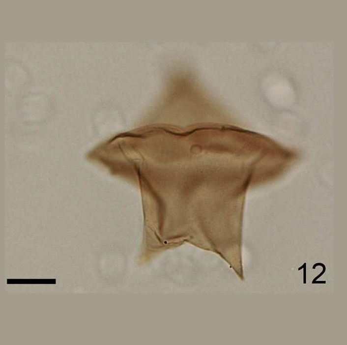
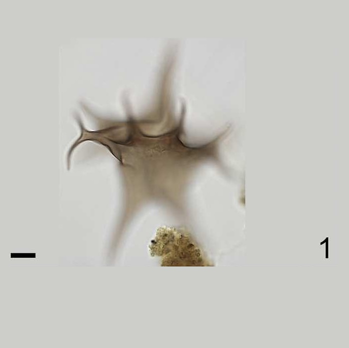
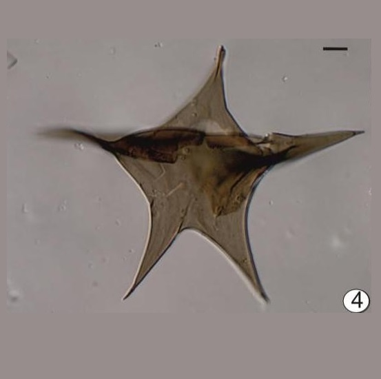
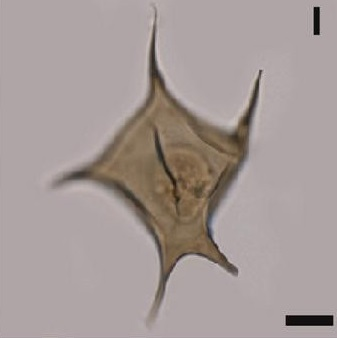
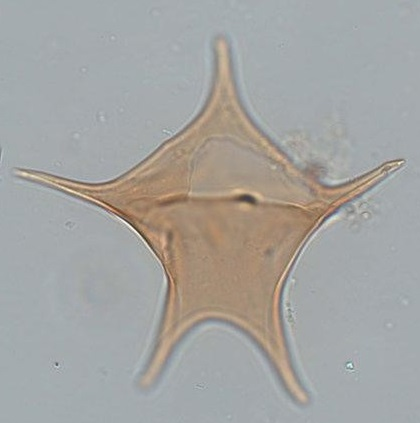
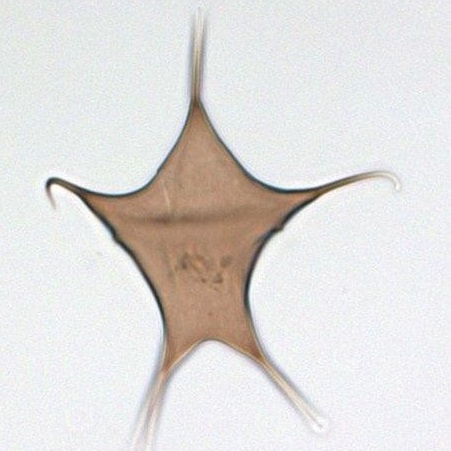
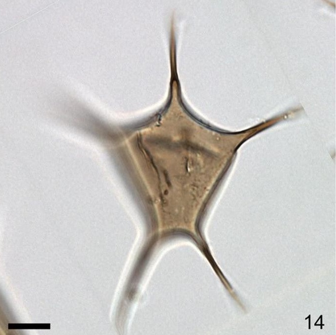

CYSTS LIST
- Alexandrium
- Archaeperidinium/RBSC
- Brigantedinium/Protoperidinium
- Diplopsalopsis/Protoperidinium
- Dubridinium
- Gymnodinium
- Impagidinium
- Lejeunecysta
- Nematosphaeropsis
- Peridinioids
- Polykrikos
- RBSC/Protoperidinium
- Selenopemphix
- Spiniferites
- Stelladinium
- Transparent/Hollow
- Transparent/Solid
- Transparent/Spherical
- Trinovantedinium
- Votadinium
STELLADINIUM
Surface |
Shape |
Remarks |
Species |
Central body (um.) |
Image |
SmoothLight brown |
PeridinioidConspicuous apical hornConical antapical horns |
Cingulum lacks horn-likeprojections and transversely surrounds the cyst body. |
Stelladiniumabei | 40 x 44 |
 |
Finely granulateBrown |
PeridinioidLong apical and antapical hornsNarrow base |
Processes joined attheir base forming a single bifurcate process |
Stelladiniumbifurcatum | 74 to 99 |
 |
Smooth to faintly striatePale brown |
Very developed hornsBroad bases. Thickened distal termination |
Distinctive denticulatecingular ridgesand cardinal horns |
Stelladiniumdenticulatum | 65 to 75 (L)62 to 65 (W) |
 |
Smooth to scabrateLight brown |
PeridinioidEpicyst smaller than hypocystFive horns in outline angles |
Could be spinesin cingular region |
Stelladiniumreidii | 50 to 104 (L)65 to 103 (W) |
 |
SmoothBrown |
PeidinioidEpicyst triangularProminent apical hornHypocyst trapezoidalTwo distinct antapical horns |
Presence of spines in sulcal region. Bigger sizeNo additional hornsin cingular region |
Stelladiniumrobustum | 92 to 125 (L)82 to 126 (W) |
 |
Smooth to scabrateBrown |
PeridinioidFive distinct hornsAdicional horns can be present in cingular area |
Walls of the processesconnect way beforeit reaches the distalend of the processes |
Stelladiniumstellatum | 60 to 104 (L)35 to 103 (W) |
 |
SmoothBrown |
PeridinioidFive distinct horns |
Hollow hornsRelatively narrow atthe base and tapersto a conspicuouslysolid point |
cysts ofProtoperidiniumstellatum | 30 to 47 |
 |